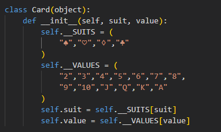
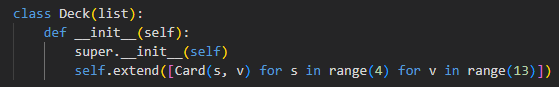
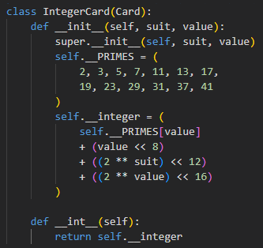
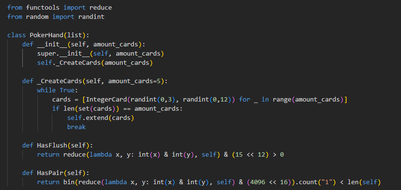

Deck of Cards
This is an implementation of a deck of cards using the OOP paradigm. The purpose of this implementation is to showcase some of the features of object-oriented programming that make it great. The other purpose is to provide a snapshot of my familiarity with OOP and Python at the beginning of this module.
Card Class

TheCardclass above has two private attributes and two public attributes.
Private attributes are attributes not intended for access from outside an instance.
Public attributes are attributes that are free to be accessed from ouside an instance.
Deck Class

TheDeckclass above inherits from the list class.
Inheritence is a feature of OOP, which allows the adoption of attributes and
methods from one class to another. By inheriting from the list class, instances
of the Deck class may be passed as an argument to the len() function,
or followed by the .sort() list method; for example.
IntegerCard Class

TheIntegerCardclass above inherits from the Card class
and further abstracts the features of a physical card.
Abstraction is the manipulation of the details of a concept to arrive at
a more general concept, and is a general technique of OOP. Usually abstraction
refers to the creation of abstract classes, which are classes that provide an
interface for other classes to implement.
But in the above example, the IntegerCard is not an abstract class.
It's an abstraction in the sense that the details of a physical card have been
encoded to a non-human readable format in preparation for an implementation of a
quick hand-ranking algorithm.
PokerHand Class

ThePokerHandclass above encapsulates details connected to a physical poker hand,
although it is not yet complete.
Encapsulation is the provision of a clear boundary to something. The objects of
OOP naturally encapsulate information in the form of attributes and methods. A good name for a
class clarifies
it's purpose, for example it's clear that the PokerHand class represents a
physical poker hand. That doesn't mean classes need to mimic physical objects though. It's also
common
to name classes after design patterns, which are abstractions of structure that is unique
to OOP.
The last thing I'd like to point out is that it's usually good practise to maintain common interfaces for your classes where possible. This can simplify programmes to a large degree, by allowing a single procedure to be enough for a bunch of different objects, which share the same interface. This idea is known as polymorphism.
If you would like to learn more about implementing a game of five card draw poker using OOP, check out my old home project. If you would like to learn more about OOP, then checkout the other module artefacts.
End of Module Reflection
At the start of this module, I had some familarity with Python and OOP already. The extent of ability was marked by the linked poker-engine project I'd worked on previously. But I had no explicit experience with design patterns or modelling languages.
Now that I'm at the end of this module, I wish I could go back to my old poker project and upgrade it's overall design. During this module, I've learnt some design patterns and python tricks that would be actually useful in that project. For example, In my old implementation, I never thought to encapsulate player actions; but if I had used the command design pattern, it would have simplified the action tracking algorithm that I frankensteined together.
During the course, I learnt some Python tricks too, such as using the classmethod decorator to constrain or diversify object initialisations. I've definitely gained an appreciation of modelling languages, and I'm thankful to have learnt terminology and good practices of object-oriented programming. It's vital for for professionals in software engineering, who are working as part of a team.